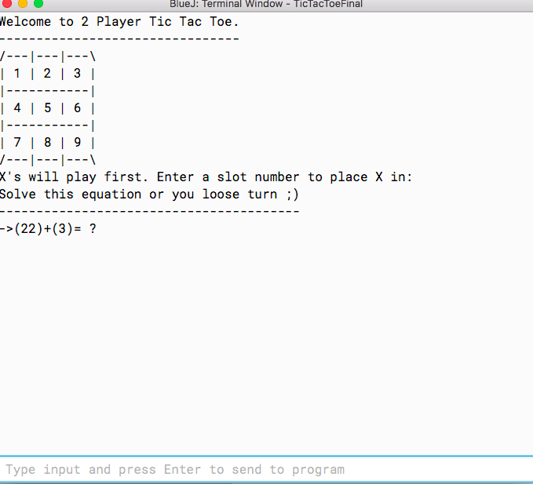
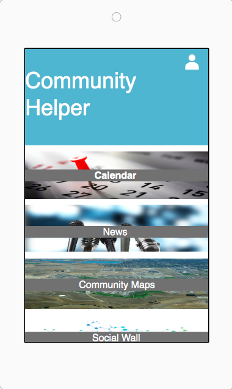
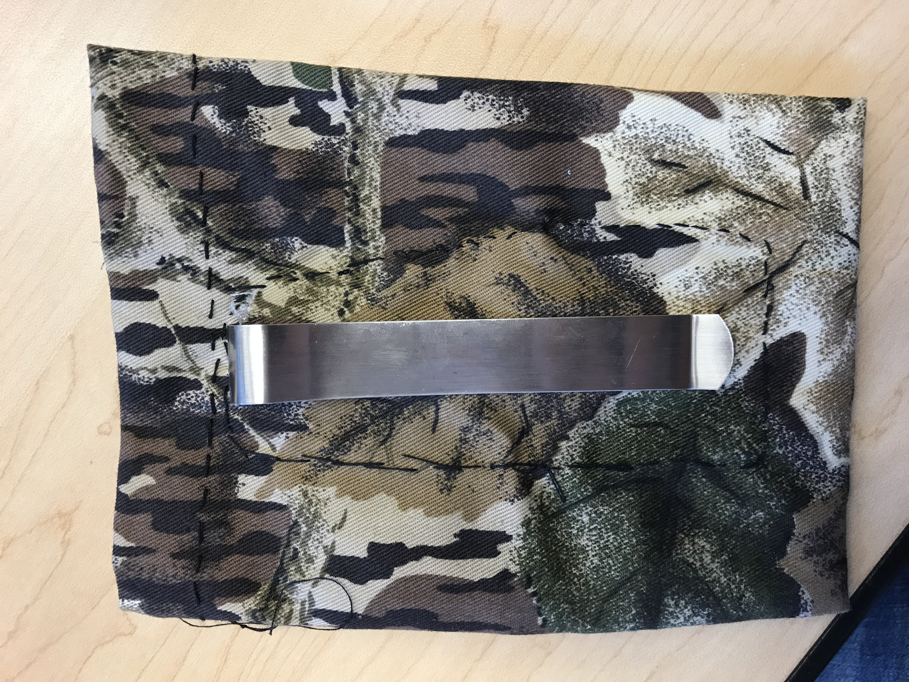
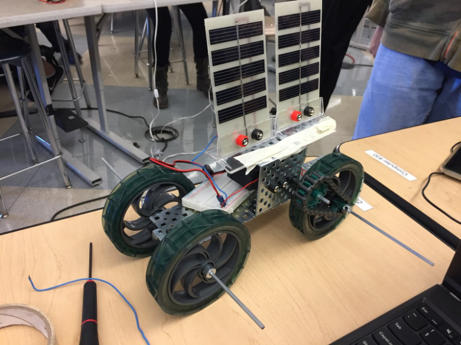
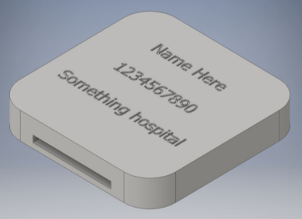
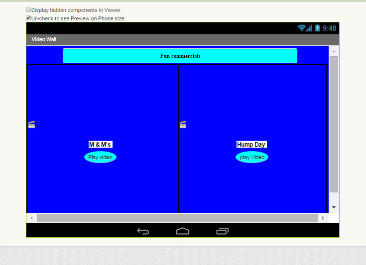
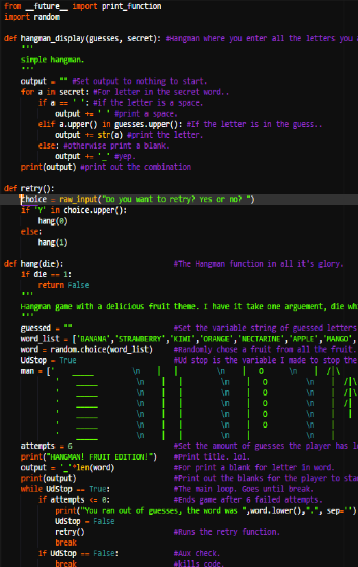

Projects
Educational Game

When : 5/1/18-5/18/18
Course : AP Computer Science
Individual
LINK TO PROJECTThis project was done individually over the course of two weeks. We did not do documentation, only coding the project and then presenting it in front of the class. This was a game called Tic Tac Toe, in which I took a starter code and added math problems into it. You are playing a fun game as well as learning how to add numbers from 1 to 100. This game was targeted towards elementary schoolers but could have also changed code to learn about any other topic. If you answer the problem correcrtly, you get to pace your piece wherever you desire. If you do not get the problem correct then you lose your turn and your partner goes. The code uses random numbers once you are playing the game. Some hardships I had during this project would be figuring out what type of code I need to use, and how to accomplish this within the time spam I had. In the end I acomplished what I had planned for, and had a well working app.

Community Helper Project
When : 12/4/17-12/15/17
Course : AP Computer Science
Group Project
This project required a group of 2-4 people, we had to create a pototype, a full documentation, and a presentation in front of the class. This was successfully planned out due to the time we had. In the end our app looked almost like the protype, we didn't have enough time to add all the color changes we would have liked. The app was called Comminity helper, which had a youtube live stream, plus all the events that are going on in your area. This app was supposed to basically help you in your knowledge of your surroundings. Some challanges we faced were off course error with our code, and finishing our app on time for the due date. Link To Presentation
Entrepreneurship Project

When : 5/8/17-5/23/17
Course : Princibles Of Engineering
Team Project : Pocket XYZ
LINK TO PROJECTEntrepreneurship Project
More Projects in the future.
The project my team of four decided to create was to come up with a way we can attach pockets to women jeans. We noticed that women do not have pockets in most jeans and workout pants, they are usually presented as fake pockets or even not big enough to fit necessary everyday items. We took left over cloth from our closets and sowed a banker clip which easily clips on your side jeans. We made the pocket big enough and steardy enough for everyday use. The entire group did do a good amount of work overall, everybody worked on the document as well as sow one side of either the final design or prototype. One challenge we for sure overcame was how to sow very well to create a beautiful pocket for our costomers. All of us had a lot of good team work and we shared all the work equally depending on how much time we had. I loved creating this project because we were all super fond of our idea and had a lot of fun figuring out a way to create these pockets.
Solor Hydrogen Vehicle

When : 11/2/16-11/17/16
Course : Princibles Of Engineering
Team Project
This project was the most recent we created which is giving a suggestion to a Tesla Company explaining which would be a better vehicle improvment. Either a hydrogen cell car or a solar cell car. With the group suggestion we came up with, the solar cell seemed to work out a lot better then the hydrogen cell which did not move to fast compared to solar cell which had more movement.With this project my team learned a lot about working under pressure when some of our technology would not work as well as we hoped which did set our team back a few days. I specifiacally learned how to think of different stratagies on putting together cars in different ways. For example we had a vision in mind that completely changed when the vehicle would not move. We had to re design the originial design. We added on different modifications to speed up the car for a better efficiency. My specific role in this project was to create the google documentation as well as help out with building the vehicle itself the day of the building. Working as a team really did pay off in this project, we all did log on late at night to figure out our conclusions in the end. The team participated in every part of the project going through one step at a time. Website
Entrepreneurship Project

Entrepreneurship Project
When : 5/13/16 - 6/2/16
Course : Computer Science Engineering
Team Project
The next project I did for computer programming was the Entrepreneurship Project This project was a team effort project but it mostly felt like it was an individual project. The goal was to create something that hasn't been created yet or add on to something that has already been created. The point of this project was to think outside of the box and try and come up with something that helps the world.fgWith this society a lot of things have already been created so it was very challenging to create something that hasn't been created yet. We came up with the idea of a Medical Bracelet. This bracelet was meant to help elders be able to be found when they walk off somewhere and do not remember how to get back. This project was a two week process and there was two write ups as well as a presentation. The bumps that we came across would be trying to figure out how to create the website we did as well as finishing this project up on time. This project gives you an oppurtinity to be as creative as you want to be and have fun in creating what you want to create. This project also gives people the opportunity to participate in a Computer Engineering Competition for the students that got picked. I feel that this project gave students a good feeling on how they would want to help the world. The link to the website is : Website
Video Player Project

Video Player Project
When : 12/7/15 - 1/8/16
Course : Computer Science Engineering
Partner project
The point of this project was to create an app. We had a selection of apps to choose from. You could have created a game or any type of app that you wanted to pick from. I worked with a partner, the project my partner and I picked would be to create a video player. This video was supposed to have three videos, those three videos were picked by the website link but after we created the coding we added different videos that we downloaded from Youtube. I learned that if you do not have enough space for a video app inventor will not play this video, it would not download this video at all, I also learned how to code with a dfferent environments.I feel that my partner and I had good team work and we both improved on our coding. We had a lot of problems and we overcame them. We could not upload a few videos because of the space storage. We also couldn't find a tool that we needed to and we couldn't complete our code.
Hangman Project

Hangman Project
When : 3/21/16 - 3/25/16
Course : Computer Science Engineering
Partner project
The next project that we did would be the Hangman Project which is where you physically create a hangman game and you guess what the letters would be and the code tells you if you have guessed the right letter or the wrong letter. This project was a very neat idea, and a lot off fun to create with a partner. The image below shows the entire code that we created with this project.The point of this project was to practice python coding and looking at it with a different perspective.Throughout the project we stumbled on a few problems in the begining and on how to write the actual code. But throughout we got through the whole project and everything worked out perfect in the end. We also added a cool feature to where if you lose, a hangman pops up and erases an arm. which was my partners idea and it was a very neat and cool idea. I learned that there are so many different ways you could write this code, you could make it really hard or it could be a simple code. This all depends on how you look through the code and how your mind processes to create this code. This was a week long project and after we had a gallery walk and we got feedback from our peers, which I feel like is always a good idea. If you scroll all the way down you can see the pictures off all of the projects that I have done with partners or without. The link for this project is below: Hangman Project
Scratch Project

Projects
Scratch Project
Course : Computer Science Engineering
Partner project
The scratch project was a lot of fun to create because you had to work with cartoons and it was a lot of fun to see the different coding.The link to the project is below if you would like to see what my partner and I did for this specific project:https://scratch.mit.edu/projects/78164872/